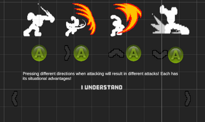
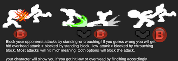

Another Platform Fighter
Lichtgewicht platform fighter voor mobiel. Een studie in combat die gewicht heeft, op een scherm zonder knoppen.
Waar het om draait
Een platform fighter valt of staat bij hoe een klap aanvoelt. Datzelfde gevecht op een telefoon spelen maakt dat moeilijker: geen knoppen met weerstand, geen precisie, en een duim die het halve scherm bedekt. De vraag die dit project stuurt is dus: hoe geef je een aanval gewicht als de speler niets voelt onder zijn vingers?
Het antwoord zit niet in één ding maar in de opeenstapeling van kleine effecten — timing, vertraging op het moment van impact, hoe ver een personage terugvliegt, hoeveel controle je even kwijt bent. Precies het soort systeem dat je alleen door spelen en bijstellen goed krijgt.

Wat ik heb gebouwd
- Het combatsysteem in Unity en C#, inclusief hitdetectie, knockback en herstelframes.
- Besturing die werkt op een touchscreen, zonder de precisie helemaal op te geven.
- Personage-animatie, afgestemd op hoe de aanvallen aanvoelen.
- Het geheel licht genoeg gehouden om soepel te draaien op gewone telefoons.

Wat ik eruit heb geleerd
Om een gevechtspel goed te laten voelen is een kwestie van kleine dingen: Timing, animatie, hit-feedback, herstelframes, geluid, visuele effecten, hitstop, camera-shake. Alles draagt bij aan hoe een aanval aanvoelt. Het is een systeem dat je alleen door testen en kritische feedback goed krijgt. Bovendien is een layout voor mobile een extra laag aan complexiteit die je moet oplossen. Hoeveel knoppen kan je kwijt op een scherm zonder dat het te druk wordt? Deze vragen zijn cruciaal voor het ontwerp.